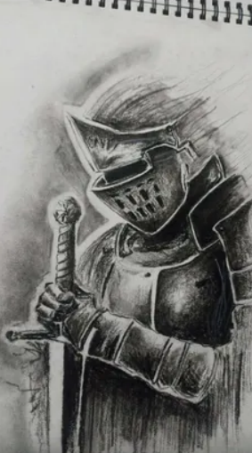

so i started drwing when i was a little kid like super little probably like 3 or 4 years old and i really love drawing from that day on i made drawings it wa super bad , but no one is absoulte perfect from the start right ?, so yeh my drawing was kinna bad till class 4 i think when i parchased a book named "learn pencil shadeing" and just because of that book i got really obsessed with drawing and i started improving and i practiced soo yeh results are bellow :)

i made this one by using charcoal pencil and it took almost an hour
i made this one by using charcoal pencils and this one took around 2 or 3 hours and its still not complete cuz i am too lazy to make this XD